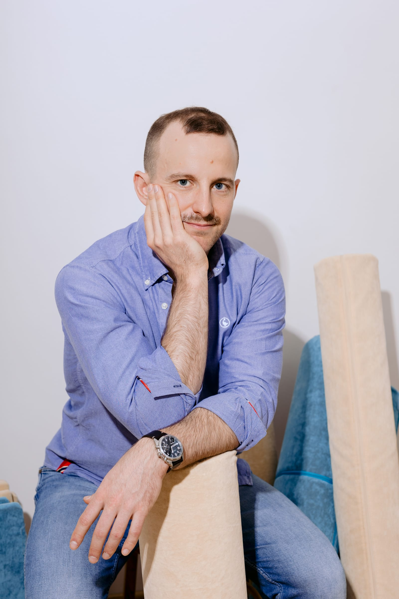
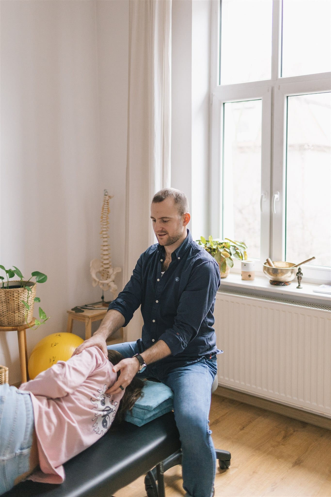
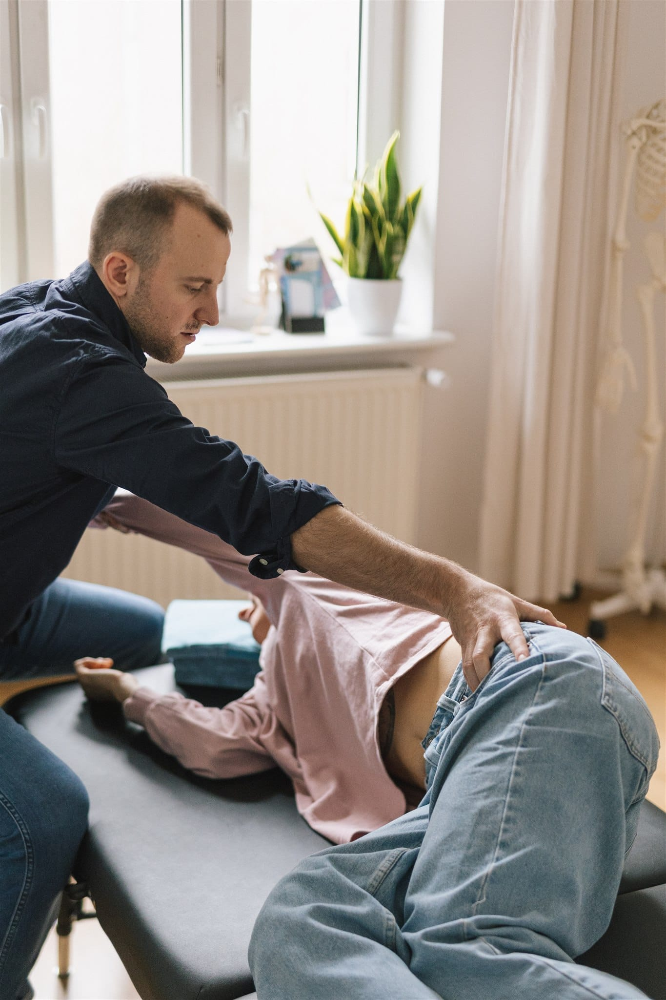

1 spotkaniePoznanie
Pierwsza sesja
Patrzymy, jak organizujesz ruch teraz. Nie diagnozuję — obserwuję. Wychodzisz wiedząc więcej o tym, co robisz.
Metoda Feldenkraisa · Gdańsk · Online
Komfort w działaniu to umiejętność. W chodzeniu, w relacjach, w pracy, w sporcie, w sztuce — można się jej uczyć.
Zdrowie to zakres.
Wstawanie z krzesła. Chodzenie. Sięganie po kubek. Mówienie. Te ruchy są dziś tak oczywiste, że ich nie zauważasz. Ale każdy z nich kiedyś był nową umiejętnością — uczyłeś się go, kiedy byłeś dzieckiem.
Kiedy umiejętność staje się automatyczna, przestajesz wybierać. Zostaje jeden wariant — ten, który raz zadziałał. Wstajesz tak samo od dwudziestu lat. Sięgasz po telefon w taki sam sposób tysiąc razy dziennie. Działa nadal — ale to nie znaczy, że jest jedyny, ani najlepszy.
Dobrą wiadomością jest, że uczenie się nie skończyło się w dzieciństwie. Nadal się uczysz — za każdym razem, kiedy zauważasz, jak działasz.
Lekkość to umiejętność.

Portret
Sesja
GabinetPracuję z ludźmi, którzy są ciekawi, jak działają. Którzy chcą mieć więcej wyboru w tym, co robią — w sporcie, w sztuce, w pracy, w codziennym ruchu. Nie potrzebują kolejnej diagnozy ani protokołu. Potrzebują warunków, w których naprawdę zauważą, co robią.
Pracuję metodą Feldenkraisa od trzynastu lat. Łączę ją z tym, co dziś rozumiemy o uczeniu się, predykcji, zachowaniu i bólu. Pracowałem ze sportowcami, artystami, ludźmi w bólu i osobami zarządzającymi dużymi organizacjami. Różne konteksty, ta sama zasada.
Kiedy wiesz, co robisz — możesz robić to, czego chcesz.
Nie obiecuję efektu po jednej sesji — choć jedna już dużo pokazuje. Głębsza zmiana to proces, bo dotyczy tego, jak organizujesz siebie w działaniu, a tego nie da się przeprogramować w 50 minut.
1 spotkaniePoznanie
Patrzymy, jak organizujesz ruch teraz. Nie diagnozuję — obserwuję. Wychodzisz wiedząc więcej o tym, co robisz.
4–12 sesjiUczenie się różnicy
Systematyczna praca z ruchem, dotykiem i uwagą. Uczysz się odróżniać. Zmiany zaczynają być widoczne poza sesjami — w chodzeniu, oddechu, w tym, jak siedzisz przy biurku.
13+ sesjiIntegracja
Cel to nie dobre odczucie tylko na stole. Cel to żeby łatwiej chodzić, oddychać, pracować, tworzyć i żyć — z większą lekkością.
Czas na poznanie Twojego sposobu działania. Spokojnie, bez wysiłku, bez celu, który trzeba osiągnąć. Nie boli, nie wymaga sprawności — wystarczy, że przyjdziesz w wygodnym ubraniu.
Rozmowa. Pytam, z czym przychodzisz. Co cię zaciekawiło, co cię uwiera, czego szukasz. Nie diagnozuję — słucham.
Obserwacja w ruchu. Wstajesz, siadasz, robisz kilka prostych rzeczy. Patrzymy razem, jak organizujesz ruch.
Praca na stole. Leżysz w ubraniu, najczęściej na plecach. Prowadzę cię delikatnym dotykiem i drobnym ruchem — czasem ja poruszam, czasem proszę, żebyś zrobił coś sam. Powoli, bez wysiłku. Możesz mówić, jeśli chcesz, ale rozmowa nie jest tu centralna — uważność jest.
Ponowna obserwacja. Wstajesz, idziesz kilka kroków. Zauważasz, co zmieniło się w tym, jak się ruszasz. Najczęściej różnica jest wyraźna od razu.
Czasem zostawiam ci coś prostego do zauważania w codziennym ruchu — zależy, z czym przyszedłeś. Czasem nie. Efekt często sam się integruje przez następne dni.
Większość metod uczy nowych instrukcji — siedź prosto, oddychaj brzuchem, schodź ze schodów inaczej. Tyle że żeby je wykonać, musisz pamiętać. A pamiętanie wymaga wysiłku. Wysiłek z czasem dokłada się do tego, co już robisz.
Praca, którą prowadzę, jest inna. Zamiast dokładać kolejne polecenia, uczę zauważać to, co już robisz — to, co dla ciebie samego stało się niewidoczne. Wtedy zmiana nie przychodzi przez korektę. Przychodzi przez to, że masz wybór, którego wcześniej nie miałeś.
Uczenie się. Zamiast ciągłego poprawiania się.
Już dużo wiedzą — z terapii, z medytacji, z lektury. Szukają warunków, w których to, co rozumieją, zacznie się przekładać na to, jak realnie działają.
Szukają większej precyzji, lepszej koordynacji, mniej zbędnego wysiłku w tym, co robią. Chcą rozumieć swoje działanie głębiej — żeby działać dokładniej.
Dla tych, którzy są zmęczeni ciągłym spinaniem się, graniem roli i działaniem bez czucia, czego naprawdę chcą.
Chcą zachować swobodę w ruchu i pewność w codziennych działaniach — w schodach, w spacerach, w sięganiu, w tym, co po prostu lubią robić. Sprawność, która zostaje na dłużej.
Chcą odzyskać wpływ. Lepiej zrozumieć, co robią ze sobą w codziennym ruchu. Przestać kręcić się tylko wokół objawów.
Łączy ich ciekawość. Nie chcą być pacjentami — chcą rozumieć, jak działają.
Słowa osób, z którymi pracowałem. Każde z innym wątkiem — lekkością, uważnością, sposobem szukania własnych rozwiązań.
„Po godzinie pracy, przy moim minimalnym wysiłku, poczułem głębokie odprężenie i taką ucieleśnioną lekkość między miednicą a czubkiem głowy."— Tomasz L.
„To są spotkania z moją uważnością i poznawaniem siebie. Każda wersja jest dobra, bo moja — z możliwością zmiany."— Katarzyna S.
„Wskazuje kierunki, zachęca do poszukiwania najbardziej naturalnych, wygodnych i optymalnych dla siebie rozwiązań."— Andrzej P.
Pierwsza sesja pokaże Ci, jak możesz zacząć zauważać, co robisz. To już dużo — ale to dopiero początek. Jeśli chcesz mieć więcej wyboru w tym, jak działasz, zapraszam do pracy.